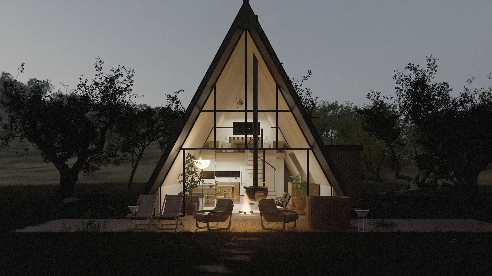
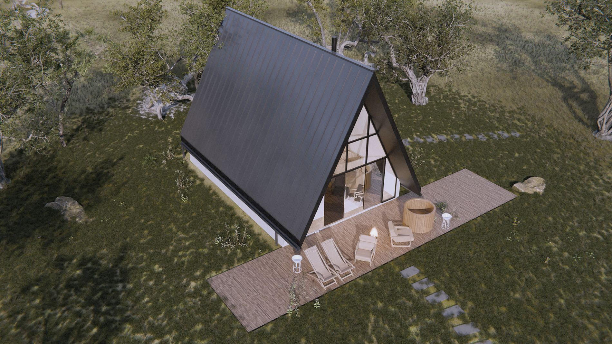
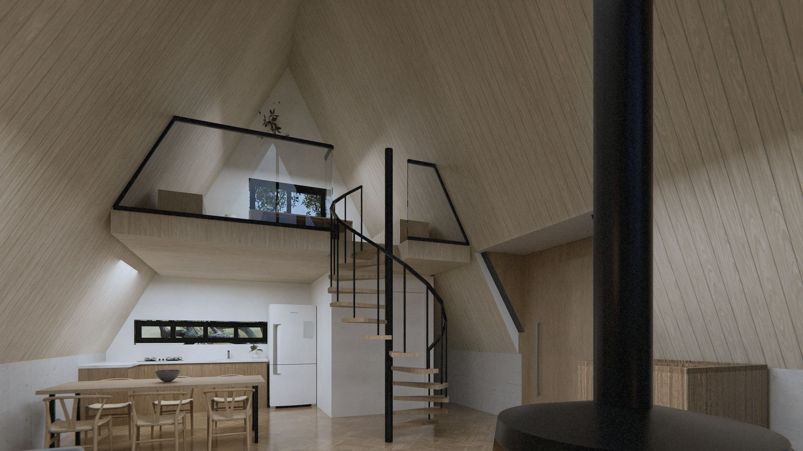
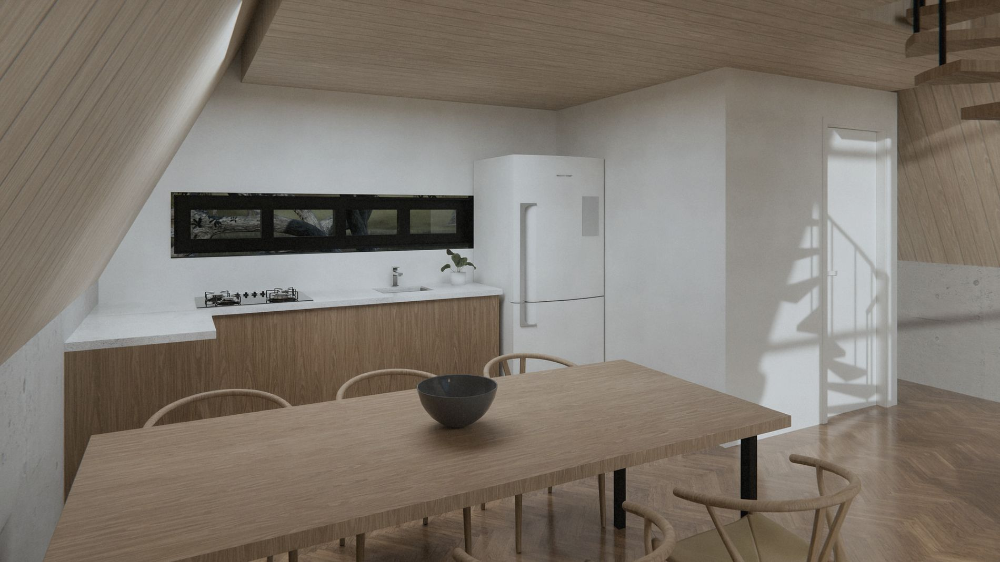
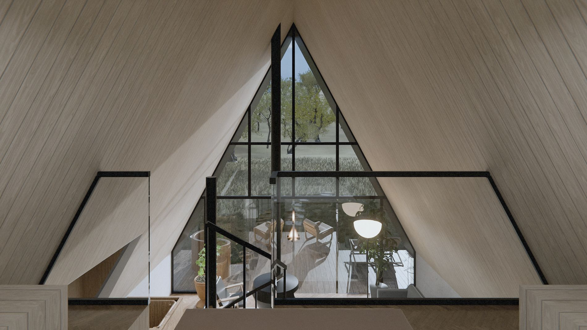

obras / chalés
Chalé Piedade

Chalé A-frame de serra, com a empena norte inteira em vidro.
Um triângulo de 62° sobre embasamento de concreto. A sala tem pé-direito duplo, lareira suspensa e escada caracol até o mezanino, onde fica o quarto.
A cobertura é em telha metálica de junta elevada, com juntas a cada 45 cm. A empena sul e o hall de entrada são em ripado de madeira.
- Local
- Piedade · SP
- Área
- 70,35 m²
- Forma
- A-frame a 62°
- Cobertura
- Telha metálica de junta elevada
- Escopo
- Projeto de arquitetura
- Etapa
- Projeto
Fachadas



Interiores





